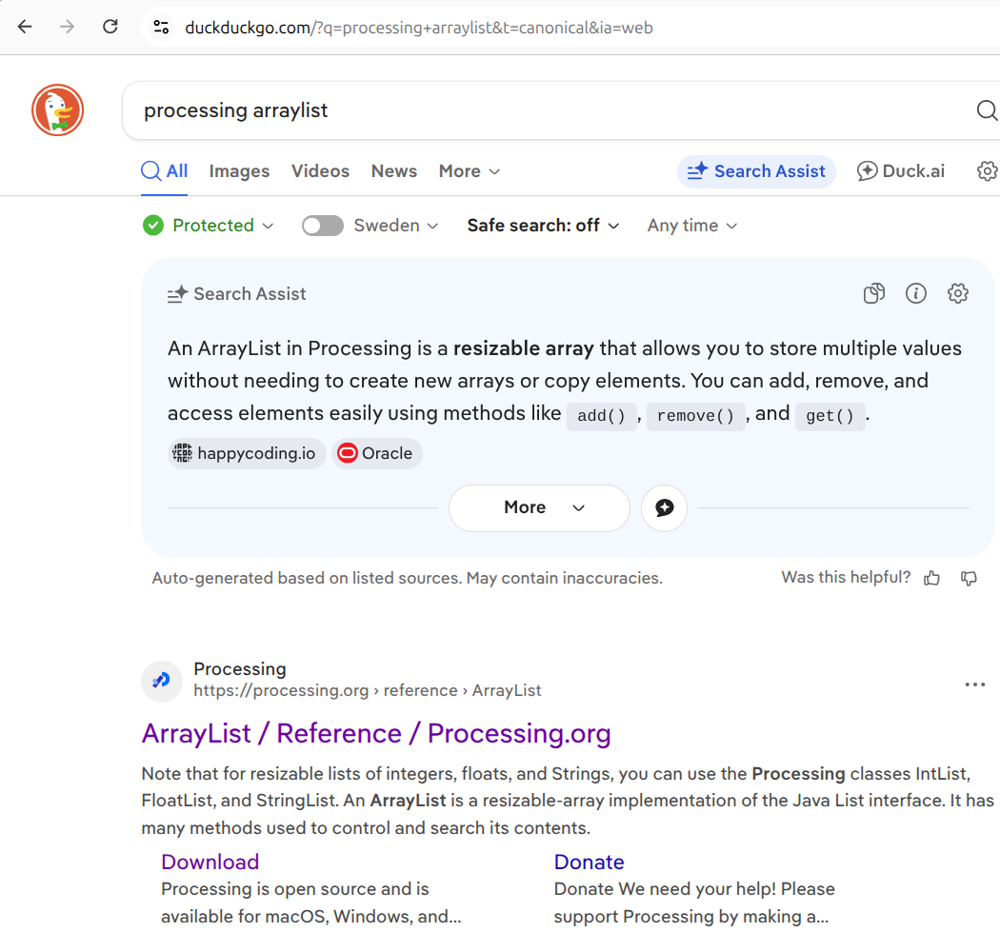
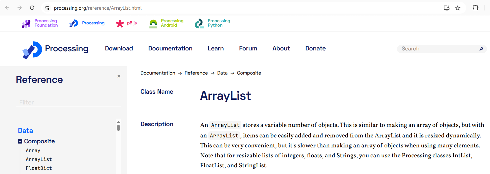

41. ArrayList¶
Före vi ska skapar våra egna klasser, ska vi ser hur man använder den.
41.1. Ett programm¶
Vi ska använda en av den nyttigaste klasser som finns: ArrayList.
För att demonstrera sin nytta, använder vi det här programmet:
float[] xs;
void setup()
{
size(320, 200);
xs = new float[10];
for (int i=0; i<10; ++i)
{
xs[i] = 160;
}
}
void draw()
{
for (int i=0; i<10; ++i)
{
xs[i] += random(-1,1);
ellipse(xs[i], height / 2, 10, 10);
}
}
Vad gör programmet? Vad hette tekniken igen för att använder mycket värder?
41.1. Svar¶
Den visar tre bollar som åker slumpmässigt till vänster eller höger. Tekniken är att använda en array.
41.2. Saker att förbättra¶
Det finns några saker att förbättra.
Den första sak som kan blir förbättrad har att göra med hur mycket ändringar är nödvändigt för att ändra mängd av bollar.
På hur mycket ställe måste du nu skriva hur mycket bollar det finns? Hur ofta vore bäst?
41.2. Svar¶
Det finns nu tre ställe var man skriver ner hur mycket bollar som finns. Bäst är att det bara finns en.
41.3. En ArrayList¶
I din webbläsare, sök på 'Processing ArrayList'.

Antagligen din första fynd är redan den Processing 'Reference Guide'
på https://processing.org/reference/ArrayList.html.

Läs den första paragraf av 'Description'. I dina ord, vad är en ArrayList?
41.3. Svar¶
En ArrayList är en klass som kan behålla noll, en, eller fler saker,
till exempel floats.
Dokumentation säger att vi kan använda FloatList,
och vi gör så.
41.4. En FloatList¶
I din webbläsare, sök på 'Processing FloatList' och hittar en likadant sida.
Läs den text i 'Description'. I dina ord, vad är en FloatList?
41.4. Svar¶
En FloatList är en klass som kan behålla noll, en, eller fler floats.
41.5. Att skapa en FloatList¶
För att använda en FloatList måste vi ändra den här rad:
Den här rad måste blir så här:
För att skapa en FloatList in minnet av datorn,
måste vi ändra den här rad också:
Den här rad blir:
Här tappar vi bort den storlek av arrayen: vi bestämma detta senare.
Vad du har gjort är att du har användt den 'constructor'
av en FloatList. En 'constructor' är den funktion som är kallad
när du skapar ett nytt -i den här fall- FloatList.
För att fylla FloatListen med värder ändrar vi for-loopen till:
Det är något nytt: vi lägger tio gånger en värde till: 'append' betyder
'att lägga till'. Vi kan ändra storleken av en ArrayList!
Nästa: en FloatList har båda så-kallade 'getters' och 'setters':
med en 'getter' kan du läsa vad är inne i FloatListen,
med en 'setter' kan du skriva vad är inuti en FloatList.
Om vi int användde append, vore en bra exampel av en 'setter':
blir:
Kolla på den period (.). Vi kan läser det som 'av'.
I den här fall kann vi säger 'Av xs, skriver på i:e plats
värdet 160'.
Koden också har en 'getter':
Den blir:
Vi kan läser xs.get(i) som 'Av xs, läs värdet på den i:e plats'.
Till sist finns det en rad kvar som inte funkar än:
Andra raden så att den funkar. Tips: den här rad ska har båda
en get och en set.
41.5. Svar¶
Raden blir så här:
41.6. Men nu klokare¶
Vi har sagt att det är bättre att bara skriva på ett ställe hur mycket bollar det finns.
I början av programmet skriver vi detta redan, med den här rad:
Efter detta behöver vi inte längre skriva den 10 längre.
Istället finns en 'getter' till i xs, kallad size,
som ger värdet hur stor xs är. Du kann använder den så här:
Ändra koden för att använda size istället av den hårtkodade 10.
41.6. Svar¶
Du ändrar raden:
till
41.7. Slutuppgift¶
Ändra koden så att den börjar med ingen eller en boll. Långsamt skull antalet av bollar ökar. Andvänder ditt eget förnuft för att göra ökningen långsamt nog.